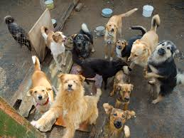

Es una instalación que sirve como espacio de acogida a animales sin hogar, perdidos o abandonados, en su mayoría, perros y gatos. Sin embargo, se encuentran también animales salvajes, exóticos de importación, o animales de gran tamaño, como elefantes, caballos, etc.
